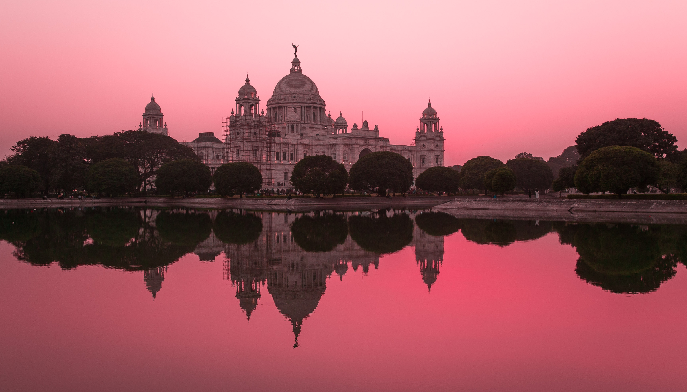

India Election Results: Modi and the B.J.P. Make History

India Election Results: Gandhi Concedes as Modi Makes History
With a commanding lead, Prime Minister Narendra Modi and his party are set to expand their majority. “India wins yet again!” he posted on Twitter.India has produced in decades, appeared easily headed for another five-year term, according to election returns so far.
Prime Minister Narendra Modi, one of the most powerful and divisive leaders India has produced in decades, appeared easily headed for another five-year term, according to election returns so far.
The Election Commission reported that Mr. Modi’s Bharatiya Janata Party,
or B.J.P., was ahead in at least 300 parliamentary districts, far beyond
the 272 seats it would need for a majority in the 543-seat Parliament.

The main opposition Congress Party was ahead in 49 seats, according to Election Commission data.
But that was before tensions with Pakistan handed Mr. Modi an issue he
could command. He campaigned heavily on national security and on a
forceful foreign policy, and it's now clear that played well among
India’s 900 million registered voters.
In Prime Minister Narendra Modi’s small inner circle, the B.J.P.’s president, Amit Shah, is perhaps his closest confidante. And outside of Mr. Modi himself, Mr. Shah is the party operative most credit with helping to engineer this victory.
For much of the election campaign, Mr. Shah, 54, a Hindu hard-liner who is projected to win a parliamentary seat in the state of Gujarat, focused his attention on the state of West Bengal, home to many of India’s Muslims. And his rhetoric has been bluntly anti-Muslim. In countless speeches there, he painted his rivals as soft on illegal immigration from Muslim-majority Bangladesh, which borders West Bengal. He accused opposition politicians of funding Islamic schools that jeopardized India’s Hindus.